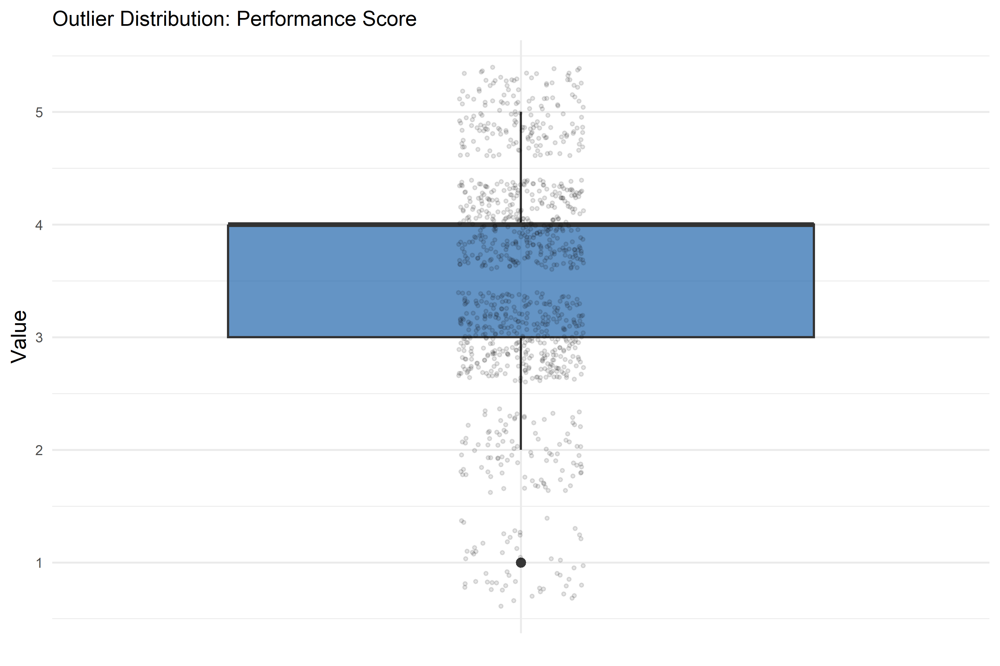
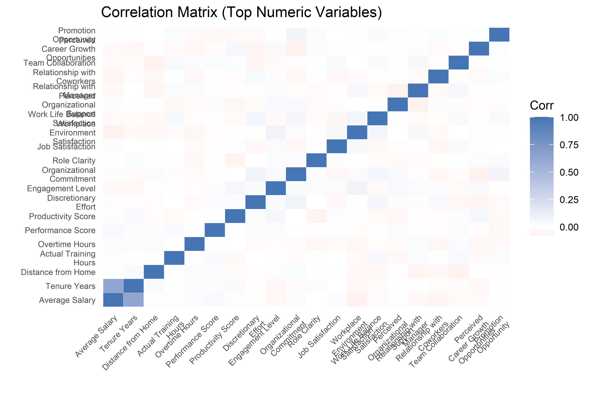
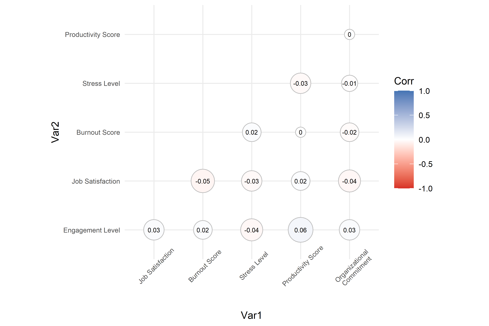
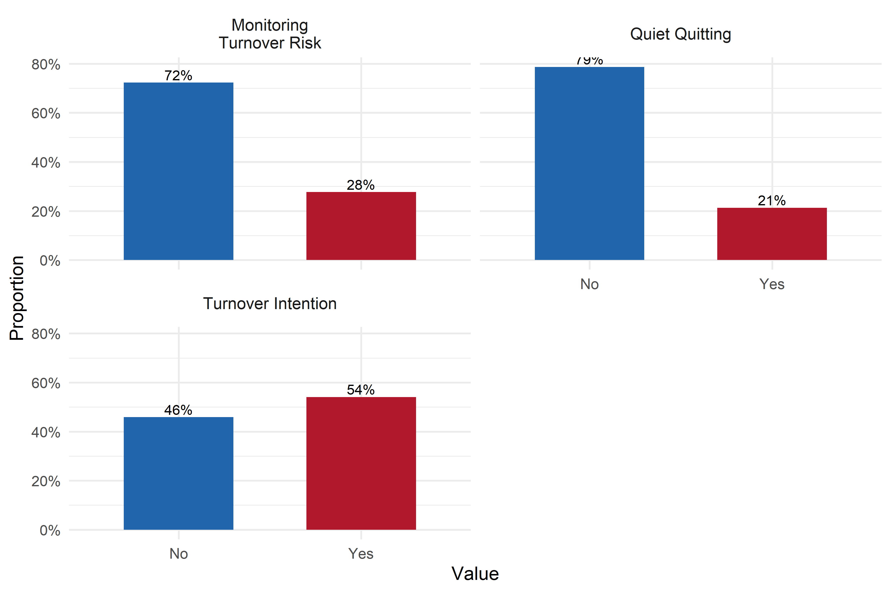
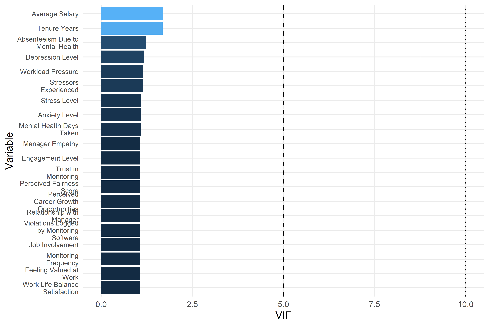
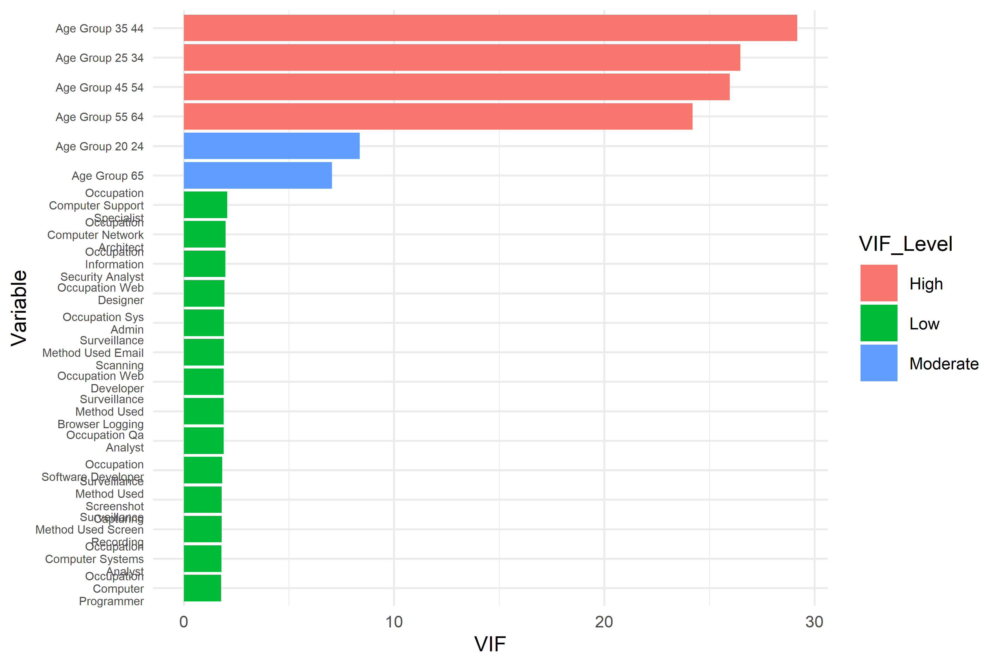
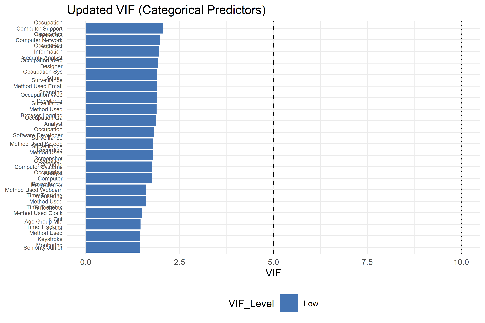
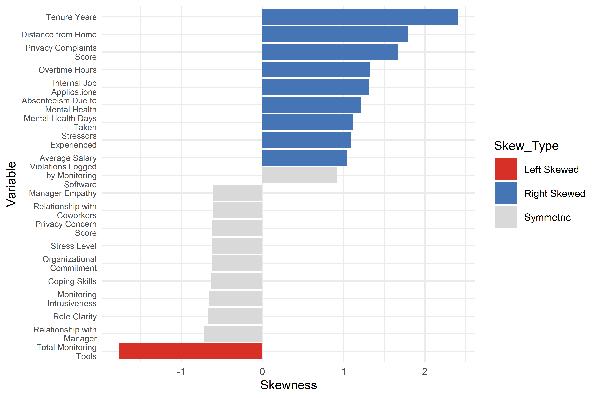
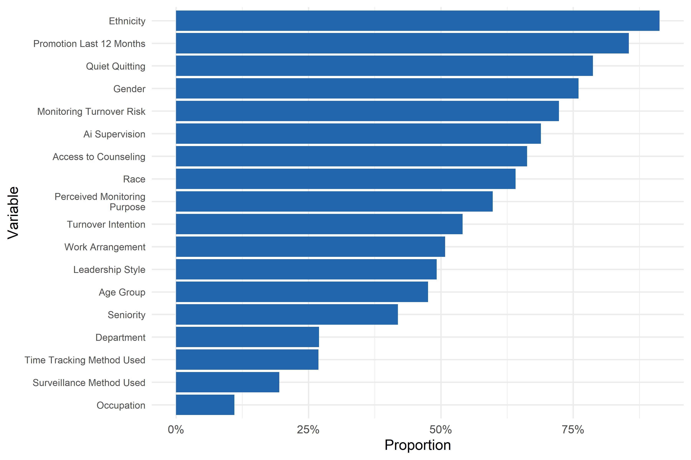
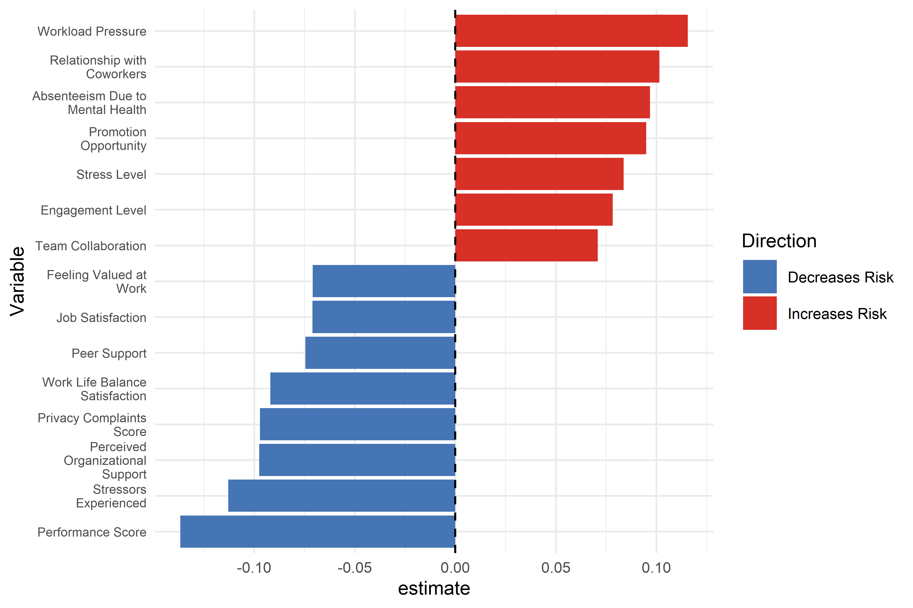

Workforce Analytics Using Synthetic HR Data: Exploratory Data Analysis
Kevin Allen Cauley
March 28, 2026
| Attribute | Description |
|---|---|
| Project Type | Workforce Analytics / HR Predictive Modeling |
| Dataset Source | Research-informed synthetic HR dataset |
| Observations | 1,000 employees |
| Variables | 73 workforce variables |
| Primary Tools | R, tidyverse, ggplot2, fastDummies |
| Analysis Scope | Exploratory analysis, correlation analysis, multicollinearity diagnostics, and predictive modeling preparation |
Introduction
The objective of this project is to demonstrate how organizations can use internal employee data to build predictive analytics models that support evidence-based human resource decision-making.
Because real organizational HR datasets are rarely publicly available, this project utilizes a synthetic workforce dataset generated from patterns observed in:
- U.S. Bureau of Labor Statistics workforce data
- Peer-reviewed employee well-being research
- Workplace monitoring and privacy studies
- Organizational behavior and turnover literature
The dataset incorporates factors associated with:
- Employee turnover intention
- Quiet quitting behavior
- Workplace monitoring–related turnover risk
By combining these research-informed variables, the project demonstrates how organizations can apply predictive modeling to workforce analytics, enabling data-driven HR strategies that improve retention, employee well-being, and organizational effectiveness.
This project demonstrates a full analytics pipeline exploring workforce behavior, employee wellbeing, workplace monitoring, and turnover prediction using a synthetic HR dataset.
The analysis includes exploratory data analysis, correlation analysis, multicollinearity diagnostics, and predictive modeling to examine patterns in employee engagement, monitoring practices, and turnover risk.
Exploratory Analysis Objectives
The goal of the exploratory data analysis (EDA) phase is to better understand the structure, distribution, and relationships within the synthetic HR dataset before developing predictive models.
The analysis focuses on four key objectives:
Understand variable distributions across continuous, ordinal, and categorical employee attributes.
Identify potential data quality issues, including missing values and extreme outliers.
Evaluate relationships among predictors, particularly correlations and multicollinearity that could affect model performance.
Assess class imbalance and skewness, which may require resampling or robust modeling approaches during predictive analysis.
These steps ensure that the dataset is properly validated before model development begins and help guide feature selection and modeling strategies.
Data Overview
The dataset used in this analysis represents a synthetic workforce dataset informed by real-world labor statistics, organizational research literature, and survey-based employee engagement measures. The dataset was designed to simulate realistic relationships between employee characteristics, workplace experiences, monitoring practices, and organizational outcomes such as turnover intention.
These variables collectively support predictive modeling of employee attitudes, behavior, and attrition risk.
Data Dictionary
The following metadata tables document the structure of the synthetic HR dataset.
Each variable is described according to:
- Variable name
- Data type
- Measurement level
- Modeling role (predictor, target, or excluded variable)
Documenting these attributes improves transparency and ensures reproducibility in later modeling stages.
| Variable | Type | Measurement | Purpose |
|---|---|---|---|
| Employee_ID | Character | Nominal | Identifier/Drop |
| First_Name | Character | Nominal | Identifier/Drop |
| Last_Name | Character | Nominal | Identifier/Drop |
| Occupation | Categorical | Nominal | Predictor |
| Department | Categorical | Nominal | Predictor |
| Average_Salary | Numeric | Ratio | Predictor |
| Tenure_Years | Numeric | Ratio | Predictor |
| Seniority | Categorical | Ordinal | Predictor |
| Work_Arrangement | Categorical | Nominal | Predictor |
| Distance_From_Home | Numeric | Ratio | Predictor |
| Age_Group | Categorical | Ordinal | Predictor |
| Gender | Categorical | Nominal | Predictor |
| Race | Categorical | Nominal | Predictor |
| Ethnicity | Categorical | Nominal | Predictor |
| Variable | Type | Measurement | Purpose |
|---|---|---|---|
| Actual_Training_Hours | Numeric | Ratio | Predictor |
| Overtime_Hours | Numeric | Ratio | Predictor |
| Performance_Score | Numeric | Ordinal | Predictor |
| Productivity_Score | Numeric | Ordinal | Predictor |
| Discretionary_Effort | Numeric | Ordinal | Predictor |
| Engagement_Level | Numeric | Ordinal | Predictor |
| Organizational_Commitment | Numeric | Ordinal | Predictor |
| Role_Clarity | Numeric | Ordinal | Predictor |
| Variable | Type | Measurement | Purpose |
|---|---|---|---|
| Job_Satisfaction | Numeric | Ordinal | Predictor |
| Workplace_Environment_Satisfaction | Numeric | Ordinal | Predictor |
| Work_Life_Balance_Satisfaction | Numeric | Ordinal | Predictor |
| Perceived_Organizational_Support | Numeric | Ordinal | Predictor |
| Relationship_With_Manager | Numeric | Ordinal | Predictor |
| Relationship_With_Coworkers | Numeric | Ordinal | Predictor |
| Team_Collaboration | Numeric | Ordinal | Predictor |
| Perceived_Career_Growth_Opportunities | Numeric | Ordinal | Predictor |
| Promotion_Opportunity | Numeric | Ordinal | Predictor |
| Learning_Opportunities | Numeric | Ordinal | Predictor |
| Manager_Support_Score | Numeric | Ordinal | Predictor |
| Perceived_Fairness_Score | Numeric | Ordinal | Predictor |
| Trust_In_Management | Numeric | Ordinal | Predictor |
| Job_Involvement | Numeric | Ordinal | Predictor |
| Recognition_Score | Numeric | Ordinal | Predictor |
| Voice_In_Decision_Making | Numeric | Ordinal | Predictor |
| Alignment_With_Mission | Numeric | Ordinal | Predictor |
| Manager_Communication_Quality | Numeric | Ordinal | Predictor |
| Feeling_Valued_At_Work | Numeric | Ordinal | Predictor |
| Variable | Type | Measurement | Purpose |
|---|---|---|---|
| Burnout_Score | Numeric | Ordinal | Future Target |
| Wellbeing_Score | Numeric | Ordinal | Future Target |
| Anxiety_Level | Numeric | Ordinal | Predictor |
| Depression_Level | Numeric | Ordinal | Predictor |
| Stress_Level | Numeric | Ordinal | Predictor |
| Mental_Health_Days_Taken | Numeric | Ratio | Predictor |
| Absenteeism_Due_To_Mental_Health | Numeric | Ratio | Predictor |
| Access_To_Counseling | Categorical | Nominal | Predictor |
| Workload_Pressure | Numeric | Ordinal | Predictor |
| Coping_Skills | Numeric | Ordinal | Predictor |
| Peer_Support | Numeric | Ordinal | Predictor |
| Manager_Empathy | Numeric | Ordinal | Predictor |
| Leadership_Style | Categorical | Nominal | Predictor |
| Stressors_Experienced | Numeric | Ratio | Predictor |
| Variable | Type | Measurement | Purpose |
|---|---|---|---|
| Time_Tracking_Method_Used | Categorical | Nominal | Predictor |
| Surveillance_Method_Used | Categorical | Nominal | Predictor |
| Total_Monitoring_Tools | Numeric | Ratio | Predictor |
| Monitoring_Frequency | Numeric | Ordinal | Predictor |
| Monitoring_Intrusiveness | Numeric | Ordinal | Predictor |
| Monitoring_Productivity_Impact | Numeric | Ordinal | Predictor |
| Monitoring_Satisfaction_Impact | Numeric | Ordinal | Predictor |
| Violations_Logged_By_Monitoring_Software | Numeric | Ratio | Predictor |
| Perceived_Monitoring_Purpose | Categorical | Nominal | Predictor |
| AI_Supervision | Categorical | Nominal | Predictor |
| Variable | Type | Measurement | Purpose |
|---|---|---|---|
| Monitoring_Transparency | Numeric | Ordinal | Predictor |
| Privacy_Concern_Score | Numeric | Ordinal | Target |
| Perceived_Intrusiveness | Numeric | Ordinal | Predictor |
| Trust_In_Monitoring | Numeric | Ordinal | Predictor |
| Privacy_Complaints_Score | Numeric | Ratio | Target |
| Variable | Type | Measurement | Purpose |
|---|---|---|---|
| Turnover_Intention | Categorical | Nominal | Target |
| Voluntary_Resignation | Categorical | Nominal | Drop |
| Involuntary_Termination | Categorical | Nominal | Drop |
| Quiet_Quitting | Categorical | Nominal | Target |
| Employer_Promise_Broken | Numeric | Ordinal | Predictor |
| Internal_Job_Applications | Numeric | Ratio | Predictor |
| Promotion_Last_12_Months | Categorical | Nominal | Predictor |
| Monitoring_Turnover_Risk | Categorical | Nominal | Target |
Dataset Preview
We begin by reviewing the first few entries of the dataset.
Dataset Structure
This view helps confirm data types and overall structure before preprocessing and modeling.
structure_df <- tibble(
Variable = names(hr_df),
Class = purrr::map_chr(hr_df, ~ class(.x)[1]),
Missing_Values = purrr::map_int(hr_df, ~ sum(is.na(.x)))
)
knitr::kable(
structure_df,
format = "html",
caption = "Dataset Structure"
) %>%
kableExtra::kable_styling(
bootstrap_options = c("striped", "hover", "condensed"),
full_width = FALSE,
position = "left"
)| Variable | Class | Missing_Values |
|---|---|---|
| occupation | character | 0 |
| department | character | 0 |
| average_salary | numeric | 0 |
| tenure_years | numeric | 0 |
| seniority | character | 0 |
| work_arrangement | character | 0 |
| distance_from_home | numeric | 0 |
| age_group | character | 0 |
| gender | character | 0 |
| race | character | 0 |
| ethnicity | character | 0 |
| actual_training_hours | numeric | 0 |
| overtime_hours | numeric | 0 |
| performance_score | numeric | 0 |
| productivity_score | numeric | 0 |
| discretionary_effort | numeric | 0 |
| engagement_level | numeric | 0 |
| organizational_commitment | numeric | 0 |
| role_clarity | numeric | 0 |
| job_satisfaction | numeric | 0 |
| workplace_environment_satisfaction | numeric | 0 |
| work_life_balance_satisfaction | numeric | 0 |
| perceived_organizational_support | numeric | 0 |
| relationship_with_manager | numeric | 0 |
| relationship_with_coworkers | numeric | 0 |
| team_collaboration | numeric | 0 |
| perceived_career_growth_opportunities | numeric | 0 |
| promotion_opportunity | numeric | 0 |
| learning_opportunities | numeric | 0 |
| manager_support_score | numeric | 0 |
| perceived_fairness_score | numeric | 0 |
| trust_in_management | numeric | 0 |
| job_involvement | numeric | 0 |
| recognition_score | numeric | 0 |
| voice_in_decision_making | numeric | 0 |
| alignment_with_mission | numeric | 0 |
| manager_communication_quality | numeric | 0 |
| feeling_valued_at_work | numeric | 0 |
| burnout_score | numeric | 0 |
| wellbeing_score | numeric | 0 |
| anxiety_level | numeric | 0 |
| depression_level | numeric | 0 |
| stress_level | numeric | 0 |
| mental_health_days_taken | numeric | 0 |
| absenteeism_due_to_mental_health | numeric | 0 |
| access_to_counseling | character | 0 |
| workload_pressure | numeric | 0 |
| coping_skills | numeric | 0 |
| peer_support | numeric | 0 |
| manager_empathy | numeric | 0 |
| leadership_style | character | 0 |
| stressors_experienced | numeric | 0 |
| time_tracking_method_used | character | 0 |
| surveillance_method_used | character | 0 |
| total_monitoring_tools | numeric | 0 |
| monitoring_frequency | numeric | 0 |
| monitoring_intrusiveness | numeric | 0 |
| monitoring_productivity_impact | numeric | 0 |
| monitoring_satisfaction_impact | numeric | 0 |
| violations_logged_by_monitoring_software | numeric | 0 |
| perceived_monitoring_purpose | character | 0 |
| ai_supervision | character | 0 |
| monitoring_transparency | numeric | 0 |
| privacy_concern_score | numeric | 0 |
| perceived_intrusiveness | numeric | 0 |
| trust_in_monitoring | numeric | 0 |
| privacy_complaints_score | numeric | 0 |
| turnover_intention | character | 0 |
| quiet_quitting | character | 0 |
| employer_promise_broken | numeric | 0 |
| internal_job_applications | numeric | 0 |
| promotion_last_12_months | character | 0 |
| monitoring_turnover_risk | character | 0 |
Dataset Summary Statistics
numeric_summary <- hr_df %>%
select(where(is.numeric)) %>%
psych::describe() %>%
as.data.frame() %>%
rownames_to_column("Variable")
knitr::kable(
numeric_summary,
format = "html",
caption = "Numeric Variable Summary Statistics"
) %>%
kableExtra::kable_styling(
bootstrap_options = c("striped", "hover", "condensed"),
full_width = FALSE,
position = "center"
) %>%
kableExtra::scroll_box(width = "100%", height = "400px")| Variable | vars | n | mean | sd | median | trimmed | mad | min | max | range | skew | kurtosis | se |
|---|---|---|---|---|---|---|---|---|---|---|---|---|---|
| average_salary | 1 | 1000 | 97278.4720 | 3.808860e+04 | 89642.5 | 93309.88000 | 35778.10320 | 38711.0 | 256358.0 | 217647.0 | 1.0438697 | 1.1987134 | 1204.4671353 |
| tenure_years | 2 | 1000 | 2.9311 | 3.366460e+00 | 1.9 | 2.21575 | 1.63086 | 0.1 | 19.7 | 19.6 | 2.4133232 | 6.5098945 | 0.1064568 |
| distance_from_home | 3 | 1000 | 9.5214 | 9.595698e+00 | 6.6 | 7.82975 | 6.67170 | 0.0 | 58.1 | 58.1 | 1.7922119 | 3.5905076 | 0.3034426 |
| actual_training_hours | 4 | 1000 | 48.6510 | 2.010516e+01 | 49.0 | 48.78125 | 20.75640 | 0.0 | 117.0 | 117.0 | -0.0268005 | -0.1466226 | 0.6357810 |
| overtime_hours | 5 | 1000 | 51.6780 | 4.117278e+01 | 43.0 | 46.16875 | 37.06500 | 0.0 | 199.0 | 199.0 | 1.3189603 | 1.7820141 | 1.3019975 |
| performance_score | 6 | 1000 | 3.4690 | 1.044093e+00 | 4.0 | 3.52750 | 1.48260 | 1.0 | 5.0 | 4.0 | -0.4344065 | -0.1668112 | 0.0330171 |
| productivity_score | 7 | 1000 | 3.5410 | 1.052343e+00 | 4.0 | 3.61250 | 1.48260 | 1.0 | 5.0 | 4.0 | -0.5276300 | -0.1679706 | 0.0332780 |
| discretionary_effort | 8 | 1000 | 3.3340 | 1.242573e+00 | 3.0 | 3.41375 | 1.48260 | 1.0 | 5.0 | 4.0 | -0.2756235 | -0.8675255 | 0.0392936 |
| engagement_level | 9 | 1000 | 3.1380 | 1.169754e+00 | 3.0 | 3.16500 | 1.48260 | 1.0 | 5.0 | 4.0 | -0.1003046 | -0.8026808 | 0.0369909 |
| organizational_commitment | 10 | 1000 | 3.6760 | 1.120839e+00 | 4.0 | 3.78125 | 1.48260 | 1.0 | 5.0 | 4.0 | -0.6264555 | -0.3291211 | 0.0354440 |
| role_clarity | 11 | 1000 | 3.6670 | 1.120431e+00 | 4.0 | 3.77875 | 1.48260 | 1.0 | 5.0 | 4.0 | -0.6720101 | -0.2034096 | 0.0354311 |
| job_satisfaction | 12 | 1000 | 3.6720 | 1.103464e+00 | 4.0 | 3.77250 | 1.48260 | 1.0 | 5.0 | 4.0 | -0.5952292 | -0.3088796 | 0.0348946 |
| workplace_environment_satisfaction | 13 | 1000 | 3.1360 | 1.197053e+00 | 3.0 | 3.16750 | 1.48260 | 1.0 | 5.0 | 4.0 | -0.0737882 | -0.8767684 | 0.0378542 |
| work_life_balance_satisfaction | 14 | 1000 | 3.3010 | 1.218969e+00 | 3.0 | 3.37625 | 1.48260 | 1.0 | 5.0 | 4.0 | -0.3040353 | -0.7684729 | 0.0385472 |
| perceived_organizational_support | 15 | 1000 | 3.2890 | 1.264547e+00 | 3.0 | 3.36125 | 1.48260 | 1.0 | 5.0 | 4.0 | -0.2631668 | -0.9160939 | 0.0399885 |
| relationship_with_manager | 16 | 1000 | 3.7180 | 1.163542e+00 | 4.0 | 3.84500 | 1.48260 | 1.0 | 5.0 | 4.0 | -0.7182278 | -0.3112148 | 0.0367944 |
| relationship_with_coworkers | 17 | 1000 | 3.7500 | 1.116578e+00 | 4.0 | 3.86125 | 1.48260 | 1.0 | 5.0 | 4.0 | -0.6093355 | -0.4132530 | 0.0353093 |
| team_collaboration | 18 | 1000 | 3.6770 | 1.076024e+00 | 4.0 | 3.77375 | 1.48260 | 1.0 | 5.0 | 4.0 | -0.6039942 | -0.2177042 | 0.0340269 |
| perceived_career_growth_opportunities | 19 | 1000 | 3.1440 | 1.127180e+00 | 3.0 | 3.14875 | 1.48260 | 1.0 | 5.0 | 4.0 | -0.0581711 | -0.7527516 | 0.0356446 |
| promotion_opportunity | 20 | 1000 | 3.2900 | 1.251985e+00 | 3.0 | 3.36250 | 1.48260 | 1.0 | 5.0 | 4.0 | -0.2408840 | -0.8961222 | 0.0395913 |
| learning_opportunities | 21 | 1000 | 3.2130 | 1.211238e+00 | 3.0 | 3.26625 | 1.48260 | 1.0 | 5.0 | 4.0 | -0.2842995 | -0.8013105 | 0.0383027 |
| manager_support_score | 22 | 1000 | 3.5980 | 1.115186e+00 | 4.0 | 3.68375 | 1.48260 | 1.0 | 5.0 | 4.0 | -0.4518786 | -0.4670992 | 0.0352653 |
| perceived_fairness_score | 23 | 1000 | 3.3050 | 1.203920e+00 | 3.0 | 3.37750 | 1.48260 | 1.0 | 5.0 | 4.0 | -0.2947119 | -0.7401477 | 0.0380713 |
| trust_in_management | 24 | 1000 | 3.3540 | 1.237827e+00 | 3.0 | 3.44250 | 1.48260 | 1.0 | 5.0 | 4.0 | -0.3679960 | -0.8116007 | 0.0391435 |
| job_involvement | 25 | 1000 | 3.0480 | 1.095854e+00 | 3.0 | 3.04625 | 1.48260 | 1.0 | 5.0 | 4.0 | -0.0447313 | -0.6474676 | 0.0346540 |
| recognition_score | 26 | 1000 | 3.2660 | 1.220957e+00 | 3.0 | 3.33000 | 1.48260 | 1.0 | 5.0 | 4.0 | -0.2237420 | -0.8508400 | 0.0386100 |
| voice_in_decision_making | 27 | 1000 | 3.0820 | 1.287219e+00 | 3.0 | 3.10250 | 1.48260 | 1.0 | 5.0 | 4.0 | -0.1245990 | -1.0672075 | 0.0407054 |
| alignment_with_mission | 28 | 1000 | 3.1650 | 1.200507e+00 | 3.0 | 3.20625 | 1.48260 | 1.0 | 5.0 | 4.0 | -0.1665602 | -0.8598710 | 0.0379634 |
| manager_communication_quality | 29 | 1000 | 3.4930 | 1.095971e+00 | 4.0 | 3.54500 | 1.48260 | 1.0 | 5.0 | 4.0 | -0.3354158 | -0.6040587 | 0.0346576 |
| feeling_valued_at_work | 30 | 1000 | 3.2800 | 1.137055e+00 | 3.0 | 3.33125 | 1.48260 | 1.0 | 5.0 | 4.0 | -0.3298411 | -0.5930632 | 0.0359568 |
| burnout_score | 31 | 1000 | 4.1380 | 1.537309e+00 | 4.0 | 4.15875 | 1.48260 | 1.0 | 7.0 | 6.0 | -0.0864439 | -0.6790362 | 0.0486140 |
| wellbeing_score | 32 | 1000 | 4.6480 | 1.358655e+00 | 5.0 | 4.71750 | 1.48260 | 1.0 | 7.0 | 6.0 | -0.4493707 | -0.0092875 | 0.0429644 |
| anxiety_level | 33 | 1000 | 3.2390 | 1.274953e+00 | 3.0 | 3.29875 | 1.48260 | 1.0 | 5.0 | 4.0 | -0.2648920 | -0.8647069 | 0.0403175 |
| depression_level | 34 | 1000 | 3.1610 | 1.201050e+00 | 3.0 | 3.19375 | 1.48260 | 1.0 | 5.0 | 4.0 | -0.0688090 | -0.8783007 | 0.0379805 |
| stress_level | 35 | 1000 | 3.7290 | 1.122862e+00 | 4.0 | 3.84625 | 1.48260 | 1.0 | 5.0 | 4.0 | -0.6152853 | -0.3149462 | 0.0355080 |
| mental_health_days_taken | 36 | 1000 | 0.9560 | 1.031081e+00 | 1.0 | 0.80750 | 1.48260 | 0.0 | 5.0 | 5.0 | 1.1113951 | 1.0823888 | 0.0326056 |
| absenteeism_due_to_mental_health | 37 | 1000 | 1.5360 | 1.454242e+00 | 1.0 | 1.34250 | 1.48260 | 0.0 | 10.0 | 10.0 | 1.2085295 | 2.2362370 | 0.0459872 |
| workload_pressure | 38 | 1000 | 3.2630 | 1.193841e+00 | 3.0 | 3.30000 | 1.48260 | 1.0 | 5.0 | 4.0 | -0.1602054 | -0.9107177 | 0.0377526 |
| coping_skills | 39 | 1000 | 3.6700 | 1.171526e+00 | 4.0 | 3.79000 | 1.48260 | 1.0 | 5.0 | 4.0 | -0.6335483 | -0.4095321 | 0.0370469 |
| peer_support | 40 | 1000 | 3.5730 | 1.105393e+00 | 4.0 | 3.65500 | 1.48260 | 1.0 | 5.0 | 4.0 | -0.4334629 | -0.4157130 | 0.0349556 |
| manager_empathy | 41 | 1000 | 3.6380 | 1.122594e+00 | 4.0 | 3.74000 | 1.48260 | 1.0 | 5.0 | 4.0 | -0.6088425 | -0.3177880 | 0.0354995 |
| stressors_experienced | 42 | 1000 | 1.0170 | 1.073249e+00 | 1.0 | 0.85375 | 1.48260 | 0.0 | 6.0 | 6.0 | 1.0874214 | 1.0440457 | 0.0339391 |
| total_monitoring_tools | 43 | 1000 | 1.8060 | 4.080815e-01 | 2.0 | 1.88875 | 0.00000 | 0.0 | 2.0 | 2.0 | -1.7639529 | 1.7595222 | 0.0129047 |
| monitoring_frequency | 44 | 1000 | 3.0630 | 1.128851e+00 | 3.0 | 3.07875 | 1.48260 | 1.0 | 5.0 | 4.0 | -0.1194666 | -0.7202537 | 0.0356974 |
| monitoring_intrusiveness | 45 | 1000 | 3.6560 | 1.101307e+00 | 4.0 | 3.76125 | 1.48260 | 1.0 | 5.0 | 4.0 | -0.6609436 | -0.1633667 | 0.0348264 |
| monitoring_productivity_impact | 46 | 1000 | 2.7740 | 1.248392e+00 | 3.0 | 2.71750 | 1.48260 | 1.0 | 5.0 | 4.0 | 0.2164568 | -0.8570380 | 0.0394776 |
| monitoring_satisfaction_impact | 47 | 1000 | 3.0370 | 1.251878e+00 | 3.0 | 3.04625 | 1.48260 | 1.0 | 5.0 | 4.0 | -0.0146975 | -0.9486239 | 0.0395879 |
| violations_logged_by_monitoring_software | 48 | 1000 | 0.9930 | 9.868763e-01 | 1.0 | 0.86625 | 1.48260 | 0.0 | 5.0 | 5.0 | 0.9129046 | 0.5057224 | 0.0312078 |
| monitoring_transparency | 49 | 1000 | 3.3460 | 1.205710e+00 | 3.0 | 3.42500 | 1.48260 | 1.0 | 5.0 | 4.0 | -0.3576547 | -0.7334044 | 0.0381279 |
| privacy_concern_score | 50 | 1000 | 3.6730 | 1.143406e+00 | 4.0 | 3.78125 | 1.48260 | 1.0 | 5.0 | 4.0 | -0.6146231 | -0.4106227 | 0.0361577 |
| perceived_intrusiveness | 51 | 1000 | 3.5540 | 1.200219e+00 | 4.0 | 3.64000 | 1.48260 | 1.0 | 5.0 | 4.0 | -0.4290416 | -0.7979299 | 0.0379542 |
| trust_in_monitoring | 52 | 1000 | 3.4330 | 1.243003e+00 | 4.0 | 3.53500 | 1.48260 | 1.0 | 5.0 | 4.0 | -0.4640455 | -0.7768648 | 0.0393072 |
| privacy_complaints_score | 53 | 1000 | 0.4510 | 7.100022e-01 | 0.0 | 0.30625 | 0.00000 | 0.0 | 4.0 | 4.0 | 1.6649145 | 2.8399004 | 0.0224522 |
| employer_promise_broken | 54 | 1000 | 3.0990 | 1.180929e+00 | 3.0 | 3.11750 | 1.48260 | 1.0 | 5.0 | 4.0 | -0.0241363 | -0.8565812 | 0.0373443 |
| internal_job_applications | 55 | 1000 | 0.6160 | 8.690796e-01 | 0.0 | 0.45375 | 0.00000 | 0.0 | 3.0 | 3.0 | 1.3099298 | 0.8028280 | 0.0274827 |
Data Preparation
Variable Definitions
We define groups of numeric predictors, categorical predictors, and target variables to support later exploratory analysis and modeling.
# Always Clean Variable Names First
names(hr_df) <- janitor::make_clean_names(names(hr_df))
# Numeric variables
num_vars <- c(
"average_salary", "tenure_years", "distance_from_home", "actual_training_hours",
"overtime_hours", "mental_health_days_taken", "absenteeism_due_to_mental_health",
"stressors_experienced", "violations_logged_by_monitoring_software",
"privacy_complaints_score", "burnout_score", "wellbeing_score", "anxiety_level",
"depression_level", "stress_level", "performance_score", "productivity_score",
"discretionary_effort", "engagement_level", "organizational_commitment",
"role_clarity", "job_satisfaction", "workplace_environment_satisfaction",
"work_life_balance_satisfaction", "perceived_organizational_support",
"relationship_with_manager", "relationship_with_coworkers", "team_collaboration",
"perceived_career_growth_opportunities", "promotion_opportunity",
"learning_opportunities", "manager_support_score", "perceived_fairness_score",
"trust_in_management", "job_involvement", "recognition_score",
"voice_in_decision_making", "alignment_with_mission",
"manager_communication_quality", "feeling_valued_at_work",
"monitoring_frequency", "monitoring_intrusiveness",
"monitoring_productivity_impact", "monitoring_satisfaction_impact",
"monitoring_transparency", "privacy_concern_score",
"trust_in_monitoring", "workload_pressure", "coping_skills",
"peer_support", "manager_empathy"
)
# Categorical variables
cat_vars <- c(
"age_group", "gender", "race", "ethnicity", "occupation", "department", "seniority",
"work_arrangement", "time_tracking_method_used", "surveillance_method_used",
"access_to_counseling", "leadership_style", "perceived_monitoring_purpose",
"ai_supervision", "promotion_last_12_months"
)
# Targets
cat_target_vars <- c(
"turnover_intention", "quiet_quitting", "monitoring_turnover_risk"
)
num_target_vars <- c(
"burnout_score", "wellbeing_score", "privacy_concern_score", "privacy_complaints_score"
)Variable Validation
This validation step confirms that all expected predictor variables exist in the merged dataset before downstream analysis begins. Detecting missing variables early prevents silent modeling errors later in the pipeline.
Data Preprocessing
Prior to exploratory analysis, character variables are converted to factors to ensure appropriate handling during statistical modeling and visualization.
Exploratory Data Analysis
This section explores trends, patterns, distributions, and possible anomalies across both numeric and categorical variables. The goal is to better understand the synthetic dataset before predictive modeling.
Variable Type Classification
Before plotting, numeric variables are divided into likely continuous variables and Likert-style variables based on the number of distinct values.
Variable Classification
For exploratory analysis, variables were grouped into four categories based on their measurement scale and analytical purpose:
Continuous variables representing measurable workforce characteristics such as salary, tenure, and distance from home.
Likert-scale variables capturing employee attitudes, perceptions, and workplace satisfaction measures.
Categorical variables describing demographic attributes and organizational context such as department, occupation, and work arrangement.
Target variables representing key organizational outcomes including turnover intention, quiet quitting behavior, and monitoring-related turnover risk.
This classification structure guides the exploratory analysis and ensures that each variable type is visualized using the most appropriate statistical and graphical techniques.
Continuous Variable Distributions
We use histogram and density plots to inspect the spread and shape of continuous variables.
fig_path <- file.path(FIG_DIR, "continuous_dist.png")
numeric_vars <- hr_df %>%
select(where(is.numeric)) %>%
names()
# Limit to first 6 safely
vars_to_plot <- head(numeric_vars, 6)
plots <- lapply(vars_to_plot, function(var) {
ggplot(hr_df, aes(x = .data[[var]])) +
geom_histogram(
bins = 30,
fill = COLORS$primary,
alpha = 0.85,
color = "white"
) +
labs(
title = clean_label(var),
x = NULL,
y = NULL
) +
theme_minimal(base_size = 9) +
theme(
plot.title = element_text(size = 8),
axis.text = element_text(size = 6)
)
})
p <- gridExtra::grid.arrange(grobs = plots, ncol = 2)
## TableGrob (3 x 2) "arrange": 6 grobs
## z cells name grob
## 1 1 (1-1,1-1) arrange gtable[layout]
## 2 2 (1-1,2-2) arrange gtable[layout]
## 3 3 (2-2,1-1) arrange gtable[layout]
## 4 4 (2-2,2-2) arrange gtable[layout]
## 5 5 (3-3,1-1) arrange gtable[layout]
## 6 6 (3-3,2-2) arrange gtable[layout]Likert Scale Variable Distributions
Likert-scale variables are plotted as bar charts to show the distribution of employee attitudes, perceptions, and satisfaction levels.
fig_path <- file.path(FIG_DIR, "likert_dist.png")
likert_vars <- hr_df %>%
select(where(is.numeric)) %>%
select(where(~ max(.x, na.rm = TRUE) <= 5)) %>%
names()
vars_to_plot <- head(likert_vars, 6)
plots <- lapply(vars_to_plot, function(var) {
ggplot(hr_df, aes(x = factor(.data[[var]]))) +
geom_bar(
fill = COLORS$accent,
alpha = 0.85
) +
labs(
title = clean_label(var),
x = NULL,
y = NULL
) +
theme_minimal(base_size = 9) +
theme(
plot.title = element_text(size = 8),
axis.text = element_text(size = 6)
)
})
p <- gridExtra::grid.arrange(grobs = plots, ncol = 2)
## TableGrob (3 x 2) "arrange": 6 grobs
## z cells name grob
## 1 1 (1-1,1-1) arrange gtable[layout]
## 2 2 (1-1,2-2) arrange gtable[layout]
## 3 3 (2-2,1-1) arrange gtable[layout]
## 4 4 (2-2,2-2) arrange gtable[layout]
## 5 5 (3-3,1-1) arrange gtable[layout]
## 6 6 (3-3,2-2) arrange gtable[layout]Interpretation
Several productivity and engagement metrics appear normally distributed, suggesting that they may perform well in regression-based models. However, variables such as Overtime_Hours and Mental_Health_Days_Taken show right-skewed distributions, indicating potential behavioral outliers. These patterns may justify transformation or robust modeling approaches in later stages.
Outlier Detection
Outliers can influence statistical inference, model stability, and
interpretation of workforce trends.
Boxplots combined with jittered observations allow us to visually
inspect potential extreme values while preserving the underlying
distribution of employee observations.
This step helps identify whether unusually high or low values represent realistic workforce variation or potential data anomalies that may require transformation or robust modeling techniques.
Likert Variables (Outliers)
fig_path <- file.path(FIG_DIR, "likert_outliers.png")
var <- "performance_score"
p <- ggplot(hr_df, aes(x = "", y = .data[[var]])) +
geom_boxplot(
fill = COLORS$primary,
alpha = 0.7,
outlier.alpha = 0.15
) +
geom_point(
alpha = 0.1,
size = 0.5,
position = position_jitter(width = 0.08)
) +
labs(
title = paste("Outlier Distribution:", clean_label(var)),
y = "Value",
x = NULL
) +
theme_minimal(base_size = 9) +
theme(
plot.title = element_text(size = 9),
axis.text = element_text(size = 6)
)
ggsave(fig_path, p, width = 5.2, height = 3.5, dpi = 300, bg = "white")
print(p)
Correlation Analysis
Correlation analysis helps identify relationships between workforce variables and highlights clusters of related predictors that may influence employee behavior. Strong correlations may indicate shared underlying factors such as organizational support, engagement, or workplace monitoring practices.
Understanding these relationships is critical before predictive modeling, as highly correlated predictors can introduce multicollinearity and reduce model interpretability.
Because hierarchical clustering is used to organize the correlation matrix, we first remove numeric variables with zero variance. Variables with no variation cannot produce valid correlations and may introduce missing values that interfere with clustering algorithms.
Correlation Matrix for Numeric Variables
The following visualization displays pairwise correlations between numeric variables. Variables are automatically reordered using hierarchical clustering so that related features appear closer together in the matrix, improving interpretability.
fig_path <- file.path(FIG_DIR, "correlation_matrix.png")
# Step 1: Select numeric variables
corr_input <- hr_df %>%
dplyr::select(where(is.numeric))
# Step 2: Remove zero variance columns (SAFE — no across)
corr_input <- corr_input[, sapply(corr_input, function(x) var(x, na.rm = TRUE) > 0)]
# Step 3: Limit to first 20 variables (keeps plot readable)
corr_input <- corr_input[, 1:min(20, ncol(corr_input))]
# Step 4: Correlation
corr_matrix <- cor(corr_input, use = "pairwise.complete.obs")
# Step 5: Clean labels
colnames(corr_matrix) <- clean_label(colnames(corr_matrix))
rownames(corr_matrix) <- clean_label(rownames(corr_matrix))
# Step 6: Convert to long format
corr_df <- as.data.frame(as.table(corr_matrix))
# Step 7: Plot
p <- ggplot(corr_df, aes(Var1, Var2, fill = Freq)) +
geom_tile(color = "white") +
scale_fill_gradient2(
low = "#d73027",
mid = "white",
high = "#4575b4",
midpoint = 0
) +
labs(
title = "Correlation Matrix (Top Numeric Variables)",
x = "",
y = "",
fill = "Corr"
) +
theme_minimal(base_size = 9) +
theme(
axis.text.x = element_text(size = 6, angle = 45, hjust = 1),
axis.text.y = element_text(size = 6),
panel.grid = element_blank()
)
# Step 8: Save
ggsave(
filename = fig_path,
plot = p,
width = 6.5,
height = 4.5,
dpi = 300,
bg = "white"
)
print(p)
Pairwise Relationship Exploration

Key Correlation Insights
The correlation threshold exploration allows clearer interpretation of relationships between variables in the dataset. At the strictest threshold (∣r∣≥0.50), only one strong relationship emerges: Average Salary and Tenure Years. This relationship is expected in many organizational contexts, as employees with longer tenure often receive salary increases through accumulated experience, promotions, or periodic compensation adjustments.
As the threshold is gradually relaxed, additional relationships begin to appear among variables related to employee mental health, workplace stress, and monitoring perceptions.
At moderate thresholds (∣r∣≈0.30–0.35), correlations begin to emerge among variables associated with employee well-being. In particular, Depression Level, Stress Level, and Anxiety Level begin to show consistent associations with each other and with related mental health indicators such as Absenteeism Due to Mental Health and Mental Health Days Taken. These relationships suggest that the psychological well-being measures in the dataset behave coherently and may represent a shared underlying construct related to employee mental health.
At slightly lower thresholds (∣r∣≈0.25–0.30), additional relationships appear among workplace pressure variables. For example, Workload Pressure and Stressors Experienced begin to show associations with mental health measures, suggesting that increased workload demands and workplace stressors may contribute to elevated psychological strain among employees.
Relationships also begin to appear between monitoring-related variables and privacy perception metrics. In particular, Perceived Intrusiveness and Privacy Complaints Score show emerging correlations, indicating that employees who perceive workplace monitoring systems as more intrusive may also be more likely to report concerns related to privacy.
Taken together, the correlation analysis suggests three broad clusters of related variables within the dataset:
- Compensation and tenure dynamics (Average Salary, Tenure Years)
- Employee mental health and wellbeing indicators (Stress, Anxiety, Depression, Absenteeism)
- Workplace monitoring and privacy perception measures (Monitoring Intrusiveness, Privacy Complaints)
These patterns indicate that the synthetic dataset captures several structural relationships commonly observed in organizational behavior research, particularly the connections between workplace stressors, employee well-being, and perceptions of organizational monitoring practices.
Target Variable Exploration
This section examines the distribution of the key outcome variables used in predictive modeling. Understanding the balance of these classes is important because class imbalance can influence model training and evaluation metrics.
The following plots visualize the distribution of:
- Turnover Intention
- Quiet Quitting
- Monitoring Turnover Risk
These visualizations help assess whether the outcomes occur with roughly balanced frequencies or whether resampling techniques may be necessary during model development.
Target Variable Distributions
Below we visualize the target categorical outcomes: Turnover Intention, Quiet Quitting, and Monitoring Turnover Risk.
fig_path <- file.path(FIG_DIR, "target_class_balance.png")
valid_targets <- intersect(cat_target_vars, names(hr_df))
if (length(valid_targets) == 0) {
stop("No valid target variables found in dataset")
}
target_balance <- hr_df %>%
dplyr::select(dplyr::all_of(valid_targets)) %>%
tidyr::pivot_longer(
cols = everything(),
names_to = "Variable",
values_to = "Value"
) %>%
dplyr::count(Variable, Value, name = "n") %>%
dplyr::group_by(Variable) %>%
dplyr::mutate(Proportion = n / sum(n)) %>%
dplyr::ungroup()
print(target_balance)## # A tibble: 6 × 4
## Variable Value n Proportion
## <chr> <fct> <int> <dbl>
## 1 monitoring_turnover_risk No 723 0.723
## 2 monitoring_turnover_risk Yes 277 0.277
## 3 quiet_quitting No 787 0.787
## 4 quiet_quitting Yes 213 0.213
## 5 turnover_intention No 459 0.459
## 6 turnover_intention Yes 541 0.541Target Class Balance Comparison
fig_path <- file.path(FIG_DIR, "target_class_balance.png")
p <- ggplot(target_balance,
aes(x = Value, y = Proportion, fill = Value)) +
geom_col(width = 0.6) +
geom_text(
aes(label = scales::percent(Proportion, accuracy = 1)),
vjust = -0.25,
size = 2.4
) +
facet_wrap(~ clean_label(Variable), ncol = 2) +
scale_y_continuous(labels = scales::percent) +
scale_fill_manual(values = c(COLORS$primary, COLORS$accent)) +
theme_minimal(base_size = 9) +
theme(
legend.position = "none",
strip.text = element_text(size = 8)
)
ggsave(fig_path, p, width = 6, height = 4, dpi = 300, bg = "white")
print(p)
Turnover Intention by Department
fig_path <- file.path(FIG_DIR, "turnover_department.png")
dept_df <- dept_df %>%
mutate(Department = reorder(clean_label(Department), proportion))
p <- ggplot(dept_df, aes(x = proportion, y = Department)) +
geom_col(fill = COLORS$primary) +
scale_x_continuous(labels = scales::percent) +
theme_minimal(base_size = 9) +
theme(axis.text.y = element_text(size = 6))
ggsave(fig_path, p, width = 6, height = 4, dpi = 300, bg = "white")
print(p)
Multicollinearity Assessment
Multicollinearity occurs when two or more predictors are highly correlated, making it difficult for statistical models to distinguish their unique contributions. This section evaluates multicollinearity for both numeric and categorical predictors.
VIF for Numeric Predictors
fig_path <- file.path(FIG_DIR, "vif_numeric.png")
plot_df <- vif_df_numeric %>%
mutate(Variable = clean_label(Variable)) %>%
arrange(desc(VIF)) %>%
slice_head(n = 20) %>%
mutate(Variable = reorder(Variable, VIF))
p <- ggplot(plot_df, aes(VIF, Variable, fill = VIF)) +
geom_col(show.legend = FALSE) +
geom_vline(xintercept = 5, linetype = "dashed") +
geom_vline(xintercept = 10, linetype = "dotted") +
theme_minimal(base_size = 9) +
theme(axis.text.y = element_text(size = 6))
ggsave(fig_path, p, width = 6, height = 4, dpi = 300, bg = "white")
print(p)
VIF for Categorical Predictors
To assess multicollinearity among categorical predictors, we convert factor variables into dummy variables using one-hot encoding.
fig_path <- file.path(FIG_DIR, "vif_categorical.png")
p <- vif_df_cat %>%
arrange(desc(VIF)) %>%
slice_head(n = 20) %>%
mutate(Variable = reorder(Variable, VIF)) %>%
ggplot(aes(VIF, Variable, fill = VIF_Level)) +
geom_col() +
theme_minimal(base_size = 9) +
theme(axis.text.y = element_text(size = 5))
ggsave(fig_path, p, width = 6, height = 4, dpi = 300, bg = "white")
print(p)
Addressing Age Group Multicollinearity
The Variance Inflation Factor (VIF) measures the extent to which predictor variables are linearly associated with one another. Using a threshold of 5, the numeric predictors show no meaningful multicollinearity concerns.
For categorical predictors, however, multiple age_group dummy variables produced elevated VIF values. This occurs because the original age categories represent mutually exclusive levels of the same underlying construct. When many highly related dummy variables are included simultaneously, strong linear dependencies can arise.
To improve model stability and reduce redundancy, the original age-group categories are collapsed into three broader career-stage groupings:
- Early-Career
- Mid-Career
- Senior-Career
This transformation preserves the conceptual meaning of the variable while reducing unnecessary multicollinearity among age-related predictors.
hr_df <- hr_df %>%
mutate(
age_group = case_when(
age_group %in% c("16-19", "20-24", "25-34") ~ "Early-Career",
age_group %in% c("35-44", "45-54") ~ "Mid-Career",
age_group %in% c("55-64", "65+") ~ "Senior-Career",
TRUE ~ NA_character_
)
) %>%
mutate(
age_group = factor(
age_group,
levels = c("Early-Career", "Mid-Career", "Senior-Career")
)
)Updated Categorical VIF Check
After collapsing the age categories into broader career stages, the multicollinearity diagnostics are recalculated for the categorical predictors to confirm that the issue has been resolved.
fig_path <- file.path(FIG_DIR, "vif_updated.png")
plot_df <- vif_df_cat_updated %>%
arrange(desc(VIF)) %>%
slice_head(n = 20) %>%
mutate(
Variable = reorder(Variable, VIF)
)
p <- ggplot(plot_df, aes(x = VIF, y = Variable, fill = VIF_Level)) +
geom_col() +
geom_vline(xintercept = 5, linetype = "dashed") +
geom_vline(xintercept = 10, linetype = "dotted") +
scale_fill_manual(values = c(
"Low" = "#4575B4",
"Moderate" = "#FDAE61",
"High" = "#D73027"
)) +
labs(
title = "Updated VIF (Categorical Predictors)",
x = "VIF",
y = NULL
) +
theme_minimal(base_size = 9) +
theme(
axis.text.y = element_text(size = 5),
legend.position = "bottom"
)
ggsave(
fig_path,
p,
width = 6,
height = 4,
dpi = 300,
bg = "white"
)
print(p)
Variable Distribution Imbalance
Understanding distribution imbalance is important for predictive modeling because skewed variables and dominant categories can influence model performance, stability, and interpretation.
In workforce analytics, imbalance is expected due to real-world behavioral patterns—such as extreme overtime, absenteeism, or mental health indicators occurring in a smaller subset of employees.
Numeric Variable Skewness
fig_path <- file.path(FIG_DIR, "skewness.png")
p <- skew_df %>%
arrange(desc(abs(Skewness))) %>%
slice_head(n = 20) %>%
mutate(
Variable = clean_label(Variable),
Variable = reorder(Variable, Skewness)
) %>%
ggplot(aes(Skewness, Variable, fill = Skew_Type)) +
geom_col() +
scale_fill_manual(values = c(
"Left Skewed" = "#D73027",
"Right Skewed" = "#4575B4",
"Symmetric" = "#D9D9D9"
)) +
theme_minimal(base_size = 9) +
theme(axis.text.y = element_text(size = 6))
ggsave(fig_path, p, width = 6, height = 4, dpi = 300, bg = "white")
print(p)
Interpretation
Most workforce variables exhibit moderate skewness, particularly behavioral indicators such as overtime hours, mental health days taken, and absenteeism.
These right-skewed distributions are consistent with real-world organizational data, where extreme behaviors tend to occur among a smaller subset of employees.
From a modeling perspective, skewed variables may benefit from transformation or robust modeling techniques, particularly when using regression-based approaches.
Key takeaway: Behavioral workforce metrics tend to be right-skewed, indicating that extreme outcomes are concentrated among a smaller subset of employees rather than evenly distributed.
Categorical Class Imbalance
Categorical variables can exhibit imbalance when one category dominates the distribution. While this is common in workforce datasets, it can influence how predictive models learn patterns and evaluate performance.
The following visualization highlights the most dominant category within each categorical variable.
Dominant Category Proportion
fig_path <- file.path(FIG_DIR, "dominant_category.png")
p <- dominant_df %>%
slice_head(n = 20) %>%
ggplot(aes(Proportion, Variable)) +
geom_col(fill = COLORS$primary) +
scale_x_continuous(labels = scales::percent) +
theme_minimal(base_size = 9) +
theme(axis.text.y = element_text(size = 6))
ggsave(fig_path, p, width = 6, height = 4, dpi = 300, bg = "white")
print(p)
Interpretation
Several categorical variables show moderate imbalance, with certain categories representing a large proportion of employees. This is expected in real-world organizational data, where workforce composition is rarely evenly distributed.
From a modeling perspective, class imbalance may influence predictive performance, particularly for classification tasks. As a result, evaluation metrics beyond accuracy—such as precision, recall, and F1-score—may be more appropriate in later modeling stages.
Additionally, techniques such as class weighting or resampling may be considered if imbalance significantly impacts model performance.
Key takeaway: Categorical imbalance reflects realistic workforce composition but should be accounted for when evaluating classification model performance.
Modeling Implications
Several categorical predictors display moderate imbalance, with certain categories representing a large share of the observations. This pattern is expected because the synthetic dataset was informed by real-world workforce statistics and organizational research. In practice, many workplace attributes—such as department composition, role distribution, or managerial structure—naturally occur with uneven frequencies.
From a modeling perspective, variable imbalance can influence how predictive algorithms learn patterns from the data. Highly dominant categories may contribute disproportionately to model training, while smaller categories may provide limited information for estimating reliable effects.
For categorical target variables, class imbalance can also affect model evaluation metrics. Predictive models may achieve high overall accuracy while still performing poorly for minority outcomes. For this reason, later modeling stages may consider techniques such as class weighting, resampling, or evaluation metrics beyond simple accuracy (e.g., precision, recall, or F1-score).
Understanding these distribution patterns during exploratory analysis ensures that subsequent predictive models are interpreted appropriately and evaluated using metrics that reflect the structure of the data.
Implications for Predictive Modeling
Understanding variable distributions and relationships is an essential step before developing predictive models. Features that exhibit strong skewness, class imbalance, or multicollinearity can influence model stability, predictive accuracy, and the interpretability of model coefficients.
The exploratory analysis indicates that several numeric variables display moderate to strong skewness, while certain categorical variables exhibit varying degrees of class imbalance. These patterns reflect realistic workforce dynamics commonly observed in organizational datasets. For example, behavioral variables such as absenteeism, overtime hours, and mental health indicators often produce right-skewed distributions because extreme values occur among a relatively small subset of employees.
To ensure robust model performance, these characteristics will be considered during model development. Appropriate modeling strategies—including cross-validation, regularization techniques, and careful evaluation metrics—will be applied to ensure that predictive performance remains reliable despite non-normal distributions or imbalanced categories.
These exploratory findings therefore provide important context for selecting modeling approaches and interpreting the results of the predictive models developed in the subsequent stages of the analysis.
Key Observations from Exploratory Analysis
The exploratory analysis revealed several important patterns within the synthetic workforce dataset.
Workplace engagement variables, including organizational commitment, role clarity, and job satisfaction, exhibit relatively balanced distributions. This suggests meaningful variability in employee experiences and indicates that these features may provide useful signal in predictive models.
Several behavioral indicators—including overtime hours, absenteeism due to mental health, and mental health days taken—display right-skewed distributions. These patterns indicate that while most employees report moderate levels of these behaviors, a smaller subset experiences substantially higher workload demands or well-being challenges.
Correlation analysis shows that most numeric predictors are only weakly correlated with one another. As a result, the risk of severe multicollinearity among numeric variables is low, which improves the stability and interpretability of regression-based models.
However, the initial multicollinearity diagnostics revealed elevated variance inflation factors among the detailed age group categories. Because these categories represent mutually exclusive levels of the same variable, strong dependencies among their dummy encodings can arise. Collapsing the age groups into broader career-stage categories (Early-Career, Mid-Career, and Senior-Career) reduced this issue and produced a more stable set of predictors.
Finally, the imbalance diagnostics showed that several categorical variables contain dominant categories. While such patterns are common in workforce datasets, they may influence model learning if not handled carefully. These characteristics will therefore be considered during model development through appropriate validation strategies and performance metrics.
The exploratory diagnostics suggest that the synthetic dataset reproduces several statistical patterns commonly observed in organizational workforce datasets.
Summary of Exploratory Diagnostics
The exploratory analysis evaluated several diagnostic aspects of the dataset, including variable distributions, correlation structure, and multicollinearity. The table below summarizes the primary findings and their implications for predictive modeling.
| Diagnostic | Key_Findings | Modeling_Implications |
|---|---|---|
| Correlation Structure | Most predictors display weak pairwise correlations; the strongest relationship occurs between Average Salary and Tenure Years. | Low correlation levels reduce the risk of unstable regression coefficients. |
| Numeric Multicollinearity | Variance Inflation Factors for numeric predictors remain well below common multicollinearity thresholds. | Numeric predictors can be safely included in regression-based models without severe collinearity concerns. |
| Categorical Multicollinearity | Detailed age-group dummy variables initially produced elevated VIF values due to redundant encoding. | Collapsing age groups into broader career stages improves model stability and interpretability. |
| Numeric Distribution Shape | Several behavioral metrics such as overtime hours and absenteeism exhibit moderate right-skewness. | Tree-based models and robust validation strategies may better handle skewed behavioral metrics. |
| Categorical Class Balance | Some categorical features contain dominant categories reflecting realistic workforce distributions. | Model evaluation should consider potential class imbalance when predicting categorical outcomes. |
Predictive Modeling Preview
fig_path <- file.path(FIG_DIR, "logistic_preview.png")
model_df <- hr_df %>%
select(where(is.numeric), turnover_intention) %>%
na.omit()
model <- glm(
turnover_intention ~ .,
data = model_df,
family = binomial()
)
coef_df <- broom::tidy(model) %>%
filter(term != "(Intercept)") %>%
mutate(
Variable = clean_label(term),
Direction = ifelse(estimate > 0, "Increases Risk", "Decreases Risk")
) %>%
arrange(desc(abs(estimate))) %>%
slice_head(n = 15) %>%
mutate(Variable = reorder(Variable, estimate))
p <- ggplot(coef_df, aes(estimate, Variable, fill = Direction)) +
geom_col() +
geom_vline(xintercept = 0, linetype = "dashed") +
scale_fill_manual(values = c(
"Increases Risk" = "#D73027",
"Decreases Risk" = "#4575B4"
)) +
theme_minimal(base_size = 9) +
theme(axis.text.y = element_text(size = 6))
ggsave(fig_path, p, width = 6.5, height = 4, dpi = 300, bg = "white")
print(p)
Feature Importance Overview
This preliminary feature importance analysis provides an early indication of which workforce variables may be most strongly associated with employee turnover intention. While these results are exploratory and derived from a simple screening model, they highlight variables potentially associated with turnover risk. A more rigorous comparison of predictive models is conducted in the subsequent modeling report.
Key drivers of turnover risk include engagement, stress, and job satisfaction, suggesting both psychological and organizational factors play a central role in employee retention.
Transition to Predictive Modeling
The exploratory analysis confirms that the synthetic workforce dataset reflects realistic organizational patterns observed in employee analytics research. Distribution diagnostics, correlation analysis, and multicollinearity checks suggest that the predictor variables exhibit meaningful variability while maintaining acceptable statistical independence.
These findings indicate that the dataset is suitable for predictive modeling experiments. The next stage of analysis focuses on building machine learning models to predict Turnover Intention, while also exploring related behavioral outcomes such as Quiet Quitting and Monitoring Turnover Risk.
The modeling report evaluates multiple algorithms and compares predictive performance across approaches to identify the most informative workforce indicators associated with employee retention risk.